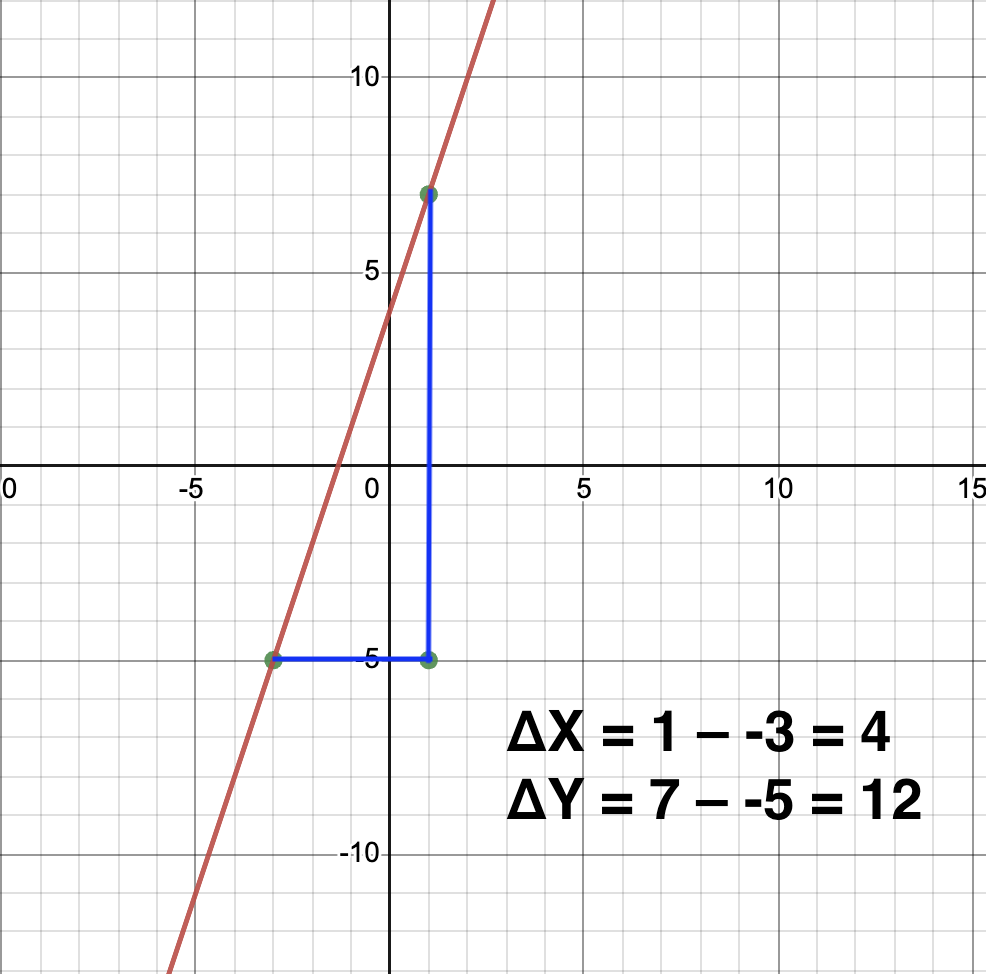

Example 1: Given the equation of a line in slope-intercept form, y = 3x + 4, what is the slope of the line, and what does it represent in the context of the problem?
We know from the prior module that in the form y = mx + b, m represents the slope or rate of change of y with respect to x.
So, in this case, we can assume that the rate of change between y and x, in this case, would be m, which in this case would be 3.
For this example, let's use a graph to help determine the slope!
Let's step through this by selecting two points from the graph (-3, -5) (1, 7).
Recall that m = y2 - y1 / x2 - x1 (which is also tangent of the angle of the formed triangle!).
You can click the button below to reveal the steps to find the x-intercept

Step 1: Slope (m) = the rate of change of y divided by the rate of change of x = 3.
Step 2: The rate of change of x = 1 - (-3) = 4.
Step 3: The rate of change of y = 7 - (-5) = 12.
Result: Thus, 12 / 4 = 3. The slope of the line is 3 or m = 3.
Example 2: Let's now solve a fractional example from a given set of two points.
Find the equation of a line that passes through the points (-3, 1) and (2, 8).
Solution:
Step 1: Recall that the slope (m) is given by the formula: m = (change in y) / (change in x)
m = (y2 - y1) / (x2 - x1) = (8 - 1) / (2 - (-3)) = 7 / 5.
Step 2: Choose one of the given points (x, y) to find the y-intercept (b). Let's use the point (2, 8) to find the y-intercept (b).
Step 3: Write the equation in slope-intercept form using the found slope (m) and the y-intercept (b). y = (7/5)x + b.
Step 4: Now, we need to find the value of "b". Since the line passes through the point (2, 8), we can substitute these values into the equation to find "b".
Step 5: Solve for "b" using 8 = 14/5 + b. To get "b" alone, subtract 14/5 from both sides:
b = 8 - 14/5. Multiply both 8 and 14 by 5.
b = (40 - 14) / 5
b = 26 / 5
The result is y = (7/5)x + 26/5. Let's check using Desmos. Plot the line and the intercepts and see if they match up!
Example 3: Let's examine where slope-intercept may be applicable in the real world with the following application problem.
A car rental agency charges a flat fee of $30 for renting a car, and an additional $15 per day. Write the equation in slope-intercept form that represents the total cost (y) of renting a car for x days.
Solution:
Step 1: Identify the slope (m) and y-intercept (b) from the given information.
In this problem, the flat fee of $30 represents the y-intercept (b) because it is the cost when "x" (the number of days) is 0. The additional charge of $15 per day represents the slope (m) because it increases the cost by $15 for each additional day.
Step 2: Write the equation in slope-intercept form (y = mx + b).
The equation will be: y = 15x + 30.
Result: the correct answer is y = 15x + 30.
Example 4: Let's examine one more application problem before taking our final quiz!
Question 2: Consider the graph of a line shown below. Determine the slope (m) and the y-intercept (b) of the line, and write its equation in slope-intercept form (y = mx + b).
Solution:
Step 1: Determine the y-intercept (b). The y-intercept is the point where the line crosses the y-axis. By observing the graph, we can see that the y-intercept is at y = 4.
Step 2: Determine the slope (m). To find the slope, we can use any two points on the line. Let's use the points (0, 4) (the y-intercept) and (2, 0) (another point on the line). The slope (m) is given by: m = (change in y) / (change in x) = (0 - 4) / (2 - 0) = -4 / 2 = -2.
Step 3: Write the equation in slope-intercept form (y = mx + b). Now that we have the y-intercept (b) as 4 and the slope (m) as -2, we can write the equation: y = -2x + 4.
Result: the correct answer is a) Slope (m) = -2, y-intercept (b) = 4; Equation: y = -2x + 4.